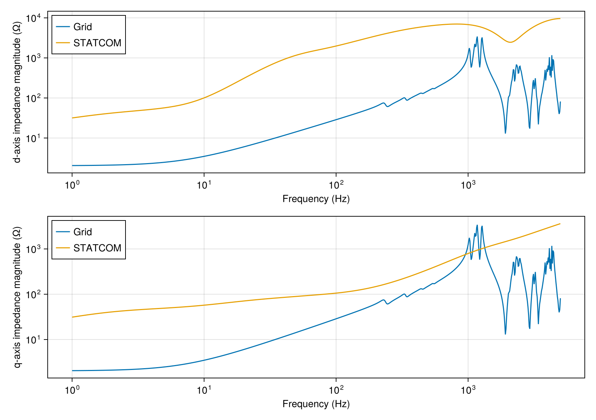
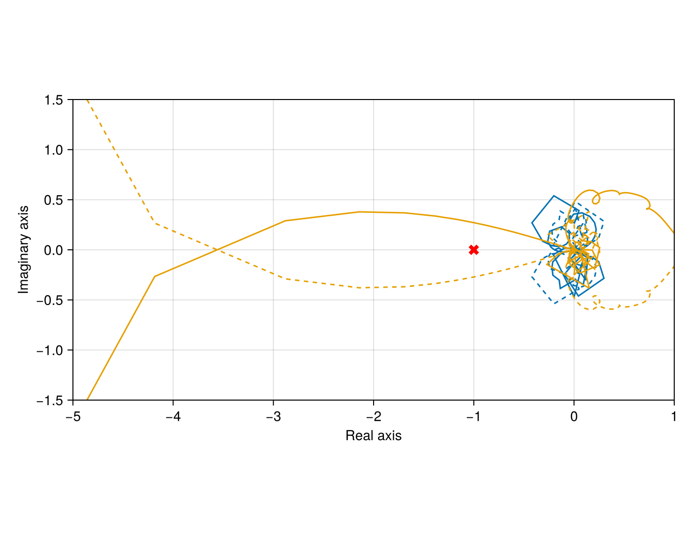

IEEE 39-bus system with a STATCOM
This tutorial models the 39-bus New England system with all network quantities referred to 345 kV and a STATCOM at Bus 9. It computes the grid impedance seen by the STATCOM, the STATCOM impedance and the stability of their interaction. Define the elements and topology first. Solve power flow, then linearize at that operating point. Finally, evaluate the frequency responses.
using PowerImpedance
using CairoMakieBases and shared line geometry
The network voltage base is the phase RMS voltage. Transformer resistance and inductance bases use 1000 MVA, 345 kV line-to-line RMS and 50 Hz. The STATCOM has its own power and voltage bases, used below for its controls.
Vm1 = 345 / sqrt(3);
Rb_345 = (345e3)^2 / 1000e6;
Lb_345 = (345e3)^2 / (2 * pi * 50 * 1000e6);All overhead lines share this flat conductor arrangement and these ground wires. Geometrical dimensions are in metres and DC resistances are in ohms per kilometre. The earth parameters are relative permeability, relative permittivity and resistivity in ohm metres. Each line's length is in metres.
conductors = Conductors(
organization = :flat, nᵇ = 3, nˢᵇ = 1, Rᵈᶜ = 0.063, rᶜ = 0.015,
yᵇᶜ = 30, Δyᵇᶜ = 0, Δxᵇᶜ = 10, Δ̃xᵇᶜ = 0, dˢᵇ = 0, dˢᵃᵍ = 10,
);
groundwires = Groundwires(
nᵍ = 2, Rᵍᵈᶜ = 0.92, rᵍ = 0.0062,
Δxᵍ = 6.5, Δyᵍ = 7.5, dᵍˢᵃᵍ = 10,
);
earth_parameters = (1, 1, 100);Generators, lines, transformers and loads
Each ideal AC source has a series impedance between it and its generator bus. The source input v is phase-voltage amplitude in kilovolts. Multiply the RMS voltage by sqrt(2) to get this amplitude. The impedance function takes complex frequency s in inverse seconds and returns ohms. Its inductance is in henries.
conductors = 3 specifies a three-phase passive. The ACDQ buses below represent its port voltages and currents in synchronous d/q coordinates.
generator_buses = 30:39;The line table gives the buses at each end and the physical length.
line_data = (
(name = :T1_2, from = 1, to = 2, length = 72.4730e3),
(name = :T1_39, from = 1, to = 39, length = 44.0833e3),
(name = :T2_3, from = 2, to = 3, length = 26.6263e3),
(name = :T2_25, from = 2, to = 25, length = 15.1647e3),
(name = :T3_4, from = 3, to = 4, length = 37.5590e3),
(name = :T3_18, from = 3, to = 18, length = 23.4523e3),
(name = :T4_5, from = 4, to = 5, length = 22.5707e3),
(name = :T4_14, from = 4, to = 14, length = 22.7470e3),
(name = :T5_6, from = 5, to = 6, length = 4.5847e3),
(name = :T5_8, from = 5, to = 8, length = 19.7493e3),
(name = :T6_7, from = 6, to = 7, length = 16.2227e3),
(name = :T6_11, from = 6, to = 11, length = 14.4593e3),
(name = :T7_8, from = 7, to = 8, length = 8.1113e3),
(name = :T8_9, from = 8, to = 9, length = 64.009e3),
(name = :T9_39, from = 9, to = 39, length = 44.0833e3),
(name = :T10_11, from = 10, to = 11, length = 7.5823e3),
(name = :T10_13, from = 10, to = 13, length = 7.5823e3),
(name = :T13_14, from = 13, to = 14, length = 17.8097e3),
(name = :T14_15, from = 14, to = 15, length = 38.2643e3),
(name = :T15_16, from = 15, to = 16, length = 16.5753e3),
(name = :T16_17, from = 16, to = 17, length = 15.6937e3),
(name = :T16_19, from = 16, to = 19, length = 34.3850e3),
(name = :T16_21, from = 16, to = 21, length = 23.8050e3),
(name = :T16_24, from = 16, to = 24, length = 10.4037e3),
(name = :T17_18, from = 17, to = 18, length = 14.4593e3),
(name = :T17_27, from = 17, to = 27, length = 30.5057e3),
(name = :T21_22, from = 21, to = 22, length = 24.6867e3),
(name = :T22_23, from = 22, to = 23, length = 16.9280e3),
(name = :T23_24, from = 23, to = 24, length = 61.7167e3),
(name = :T25_26, from = 25, to = 26, length = 56.95573e3),
(name = :T26_27, from = 26, to = 27, length = 25.9210e3),
(name = :T26_28, from = 26, to = 28, length = 83.5820e3),
(name = :T26_29, from = 26, to = 29, length = 110.2083e3),
(name = :T28_29, from = 28, to = 29, length = 26.6263e3),
);Transformer r and x are per-unit series resistance and reactance on the transformer bases above. Each winding receives half of each series quantity. All turns ratios are 345/345. A zero r keeps the winding resistance zero.
transformer_data = (
(name = :TR2_30, from = 2, to = 30, r = 0, x = 0.0181),
(name = :TR6_31, from = 6, to = 31, r = 0, x = 0.025),
(name = :TR10_32, from = 10, to = 32, r = 0, x = 0.02),
(name = :TR11_12, from = 11, to = 12, r = 0.0016, x = 0.0435),
(name = :TR12_13, from = 12, to = 13, r = 0.0016, x = 0.0435),
(name = :TR19_20, from = 19, to = 20, r = 0.0007, x = 0.0138),
(name = :TR19_33, from = 19, to = 33, r = 0.0007, x = 0.0142),
(name = :TR20_34, from = 20, to = 34, r = 0.0009, x = 0.0180),
(name = :TR22_35, from = 22, to = 35, r = 0, x = 0.0143),
(name = :TR23_36, from = 23, to = 36, r = 0.0005, x = 0.0272),
(name = :TR25_37, from = 25, to = 37, r = 0.0006, x = 0.0232),
(name = :TR29_38, from = 29, to = 38, r = 0.0008, x = 0.0156),
);Load P and Q are per-phase powers in MW and Mvar. The conversion uses the 345 kV line-to-line RMS voltage. The current magnitude follows from the three-phase apparent power. The ratio of per-phase power to squared current gives the series equivalent, with resistance in ohms, inductance in henries and capacitance in farads.
kind selects an R-L or R-C load. Use a positive magnitude for capacitor Q.
function series_load(P, Q, kind)
P = P * 1e6
Q = Q * 1e6
V = 345e3
S = sqrt(P^2 + Q^2)
S = S * 3
I = S / (sqrt(3) * V)
R = P / I^2
L_or_C = kind === :L ? Q / (I^2 * 2 * pi * 50) : I^2 / (Q * 2 * pi * 50)
return (; R, L_or_C)
end;
load_data = (
(name = :LoadB3, bus = 3, P = 107.3333, Q = 0.8, kind = :L),
(name = :LoadB4a, bus = 4, P = 166.6667, Q = 61.3333, kind = :L),
(name = :LoadB4b, bus = 4, P = 0, Q = 100, kind = :C),
(name = :LoadB5, bus = 5, P = 0, Q = 200, kind = :C),
(name = :LoadB7, bus = 7, P = 77.93333, Q = 28.0, kind = :L),
(name = :LoadB8, bus = 8, P = 174.0, Q = 58.6667, kind = :L),
(name = :LoadB12, bus = 12, P = 2.5, Q = 29.3333, kind = :L),
(name = :LoadB15, bus = 15, P = 106.6667, Q = 51.0, kind = :L),
(name = :LoadB16, bus = 16, P = 109.8, Q = 10.7667, kind = :L),
(name = :LoadB18, bus = 18, P = 52.6667, Q = 10.0, kind = :L),
(name = :LoadB20, bus = 20, P = 226.6667, Q = 34.3333, kind = :L),
(name = :LoadB21, bus = 21, P = 91.3333, Q = 38.3333, kind = :L),
(name = :LoadB23, bus = 23, P = 82.5, Q = 28.2, kind = :L),
(name = :LoadB24, bus = 24, P = 102.8667, Q = 30.73333, kind = :C),
(name = :LoadB25, bus = 25, P = 74.6667, Q = 15.7333, kind = :L),
(name = :LoadB26, bus = 26, P = 46.3333, Q = 5.6667, kind = :L),
(name = :LoadB27, bus = 27, P = 93.6667, Q = 25.1667, kind = :L),
(name = :LoadB28, bus = 28, P = 68.6667, Q = 9.2, kind = :L),
(name = :LoadB29, bus = 29, P = 94.5, Q = 8.9667, kind = :L),
(name = :LoadB32, bus = 32, P = 3.0667, Q = 1.5333, kind = :L),
(name = :LoadB39, bus = 39, P = 368, Q = 83.3333, kind = :L),
);
load_parameters = [
(; row..., series_load(row.P, row.Q, row.kind)...)
for row in load_data
];elements is a named tuple. Each entry calls a public component constructor. The comprehensions repeat that constructor over its data table. Names such as T8_9 identify the elements in the connection rows and impedance calculations. T8_9 and T9_39 are the only lines at Bus 9, where the STATCOM connects. exclude in define takes a component out of service.
elements = (;
(Symbol("G", bus) => ac_source(v = sqrt(2) * Vm1) for bus in generator_buses)...,
(Symbol("Zg", bus) => impedance(
z = s -> 0.191736 + s * 0.0122063, conductors = 3,
) for bus in generator_buses)...,
(row.name => transformer(
n = 345 / 345,
Lₚ = (row.x / 2) * Lb_345, Lₛ = (row.x / 2) * Lb_345,
Rₚ = (row.r / 2) * Rb_345, Rₛ = (row.r / 2) * Rb_345,
conductors = 3,
) for row in transformer_data)...,
(row.name => overhead_line(
length = row.length, conductors = conductors, groundwires = groundwires,
earth_parameters = earth_parameters,
) for row in line_data)...,
(load.name => impedance(
z = s -> load.R + (load.kind === :L ? s * load.L_or_C : 1 / (s * load.L_or_C)),
conductors = 3,
) for load in load_parameters)...,
);The STATCOM
ElectricalTLC stores reactor inductance in henries and resistance in ohms. The tlc constructor supplies apparent power in MVA, AC line-to-line RMS voltage in kilovolts and pole-to-pole DC voltage in kilovolts. The equations normalize reactor values with these parent-model bases. Z_ST_base is the AC impedance base in ohms. The reactor inductance is 0.08 pu on the STATCOM base of 269 MVA and 345 kV. Its resistance is 1 % of that reactance.
Vdc_ST = 110;
S_ST = 269;
Z_ST_base = 345^2 / S_ST;
Lf_ST = 0.08 * Z_ST_base / 2 / pi / 50;
Rf_ST = 0.01 * 0.08 * Z_ST_base;
electrical = ElectricalTLC(Lᵣ = Lf_ST, Rᵣ = Rf_ST);Measurement filters AC voltage and current before synchronization and control. The Butterworth order is dimensionless and ωc is a cutoff in radians per second. The measured signals use the parent model's per-unit bases.
measurements = Measurement(
v_ac = PowerImpedance.Butterworth(order = 2, ωc = 0.5e4),
i_ac = PowerImpedance.Butterworth(order = 2, ωc = 0.5e4),
);PLLSynchronization obtains the control angle from the measured q-axis voltage. Its filter acts before the PI controller. The PI gains act on per-unit voltage and frequency deviation. Integral gains are per second and ωc is in radians per second.
synchronization = PLLSynchronization(
pi_ctrl = PIControl(Kp = 0.397887357729738, Ki = 7.957747154594767),
filter = PowerImpedance.Butterworth(order = 2, ωc = 2pi * 80),
);OuterActiveVdcControl regulates DC voltage through the d-axis current reference. OuterReactiveQControl regulates reactive power and adds AC-voltage support through VoltageSupportLag. The PI gains use converter per-unit voltage, power and current. Integral gains are per second. Support gain K relates per-unit voltage error to per-unit reactive power, with lag rate ωc in inverse seconds.
outer_active = OuterActiveVdcControl(pi_ctrl = PIControl(Kp = 5.0, Ki = 5.0));
outer_reactive = OuterReactiveQControl(
pi_ctrl = PIControl(Kp = 0.04, Ki = 40.0),
support = VoltageSupportLag(K = 5.0, ωc = 1 / 0.5),
);NoInnerVoltageControl passes the outer current references to the current loop. InnerCurrentPIControl produces voltage commands from current errors in the converter per-unit system. Its proportional gain relates per-unit voltage to per-unit current. Its integral gain relates these quantities per second.
inner_voltage = NoInnerVoltageControl();
inner_current = InnerCurrentPIControl(
pi_ctrl = PIControl(Kp = 0.254647908947033, Ki = 0.8),
);PadeModulation models modulation delay. timeDelay is in seconds. The numerator and denominator orders specify the rational Padé approximation.
modulation = PadeModulation(timeDelay = 200e-6, padeOrderNum = 3, padeOrderDen = 3);Control references and power-flow setpoints use per unit on the model's bases. The outer controls select which quantities power flow solves. The voltage support reference is 0.9 of the nominal phase-voltage amplitude. Its reactive power reference is -0.5 pu on the 269 MVA base.
Q_ST = -0.5;
Vac_ref_ST = 0.9;PowerImpedance.Limits specifies active- and reactive-power limits in the converter's per-unit power base. The limits of ±1000 pu leave the converter powers unconstrained in this power flow.
statcom_limits = PowerImpedance.Limits(
P_min = -1000.0, P_max = 1000.0, Q_min = -1000.0, Q_max = 1000.0,
);Add the assembled tlc and its DC circuit to the element named tuple. Power flow needs a DC voltage source. The STATCOM controls DC voltage itself, so it cannot connect directly to an ideal DC source. The 10 kilohm series impedance connects the source and lets the STATCOM regulate its terminal voltage.
elements = (;
elements...,
G_DC = dc_source(v = 110),
STATCOM = let model = tlc(Sbase = S_ST, vACbase_LL_RMS = 345, vDCbase = Vdc_ST,
elec = electrical, meas = measurements, sync = synchronization,
outerActive = outer_active, outerReactive = outer_reactive,
innerVoltage = inner_voltage, innerCurrent = inner_current, mod = modulation,
limits = statcom_limits)
b = bases(model)
component(model; outerActive = (v_dc_ref = Vdc_ST / b.v_dc,),
outerReactive = (q_ref = (Q_ST * S_ST) / b.S,
support = (v_ac_ref = (Vm1 * sqrt(2) * Vac_ref_ST) / b.v_ac,)),
powerflow = (p_ac = 0.0 / b.S, p_dc = 0.0 / b.S))
end,
dummy_impedance = impedance(z = 1e4, conductors = 1),
);Topology
Each bus attaches complete component ports and creates d and q nets. Repeated bus names join the listed ports. The TLC exposes ac and dc. Ideal sources expose one port. Each load's side2 port connects to ground.
statcom_connections = (
NetworkBuilder.Bus(:Bus9; ports = ((:STATCOM, :ac),), domain = ACDQ),
NetworkBuilder.Bus(:STATCOM_DC;
ports = ((:STATCOM, :dc), (:dummy_impedance, :side1))),
NetworkBuilder.Bus(:DC_source;
ports = ((:dummy_impedance, :side2), (:G_DC, :dc))),
);Generator buses join each source to its impedance and the impedance to its bus.
generator_rows = (
(NetworkBuilder.Bus(Symbol("link_G", bus, "_Zg", bus, "_");
ports = ((Symbol("G", bus), :ac), (Symbol("Zg", bus), :side1)),
domain = ACDQ) for bus in generator_buses)...,
(NetworkBuilder.Bus(Symbol("Bus", bus);
ports = ((Symbol("Zg", bus), :side2),), domain = ACDQ)
for bus in generator_buses)...,
);Branch buses join each line or transformer to its from and to buses.
branch_rows = (
NetworkBuilder.Bus(Symbol("Bus", bus); ports = ((row.name, port),), domain = ACDQ)
for row in (line_data..., transformer_data...)
for (port, bus) in ((:side1, row.from), (:side2, row.to))
);Loads connect side1 to their bus and side2 to the d/q ground nets.
load_rows = (
NetworkBuilder.Bus(bus; ports = ((load.name, port),), domain = ACDQ)
for load in load_data
for (port, bus) in ((:side1, Symbol("Bus", load.bus)), (:side2, :gnd))
);
connections = (statcom_connections..., generator_rows..., branch_rows..., load_rows...);NetworkBuilder.define combines the scalar elements, rows and numerical options. voltageBase is phase RMS voltage in kilovolts. bus_voltage = true applies the power-flow bus-voltage bounds.
network = NetworkBuilder.define(elements, connections; options = (;
voltageBase = 345 / sqrt(3),
power_flow = (; is_bounded = (; bus_voltage = true)),
));Power flow
PowerFlowProblem with ACDCPowerFlow solves the AC/DC operating point. The result retains solver output, input data, node-to-bus and element-to-component mappings, diagnostics and the active components' per-port operating values. result is the PowerModelsACDC result dictionary. nodes2bus maps a node name to its domain and bus index. vm gives the magnitude of bus voltage in per unit. operating_point[:STATCOM].ac gives AC-port values in kV, rad, MW and Mvar. Port powers are positive into the component.
power_flow = compute(PowerFlowProblem(network), ACDCPowerFlow());
_, bus9_index = power_flow.nodes2bus[:Bus9d];
bus9_solution = power_flow.result["solution"]["bus"][string(bus9_index)];
bus9_voltage = (pu = bus9_solution["vm"], kV_LL_RMS = 345 * bus9_solution["vm"]);
statcom_point = power_flow.operating_point[:STATCOM];
statcom_power = (MW = statcom_point.ac.p, Mvar = statcom_point.ac.q);
(voltage = bus9_voltage, power = statcom_power)(voltage = (pu = 0.9674230253662112, kV_LL_RMS = 333.76094375134284), power = (MW = 0.1611313439868583, Mvar = 225.18396911755397))Bus 9 solves to 0.9674 pu, or 333.76 kV line-to-line RMS. The STATCOM's AC-port powers are 0.161 MW and 225.18 Mvar, positive into the STATCOM. The control references describe power injected into the AC grid. The reactive-power reference Q_ST = -0.5 pu gives -134.5 Mvar on the 269 MVA base. Voltage support adds K * (0.9 - v), where v is the solved Bus 9 voltage: 5 × (0.9 - 0.9674) ≈ -0.337 pu. The total is about -0.837 pu, or -225.18 Mvar on the same power base.
Linearization
LinearizationProblem uses this power-flow result to find the detailed converter equilibrium and linearize its electrical and control equations. The returned network_model combines the converter's small-signal admittance with the passive network models. Both impedance scans use this same solved operating point.
linearized = compute(LinearizationProblem(network, power_flow), AdmittanceLinearization());[ Info: Starting to solve for steady-state solution
[ Info: TLC steady-state solution found!Grid impedance at Bus 9
nodes orders the retained d/q coordinates. The scan excludes STATCOM to give the grid impedance seen by its AC terminal. frequency_range gives minimum and maximum frequency in Hz and the number of logarithmically spaced points: 1 Hz to 5 kHz with 800 points. response is a 2 × 2 × N tensor in ohms. frequencies stores angular frequencies in radians per second.
frequency_range = (1.0, 5e3, 800);
grid_impedance = compute(PowerImpedanceProblem(linearized.network_model;
nodes = [:Bus9d, :Bus9q], eliminated_elements = [:STATCOM],
frequency_range = frequency_range,
), NodalImpedance());STATCOM impedance at Bus 9
The scan excludes T8_9 and T9_39 to disconnect the AC grid from Bus 9. This impedance includes the STATCOM and its DC circuit. Linearization keeps the solved operating point of the complete network.
statcom_impedance = compute(PowerImpedanceProblem(linearized.network_model;
nodes = [:Bus9d, :Bus9q], eliminated_elements = [:T8_9, :T9_39],
frequency_range = frequency_range,
), NodalImpedance());Loop gain and generalized Nyquist
Form the matrix loop gain by right division of the grid impedance by the STATCOM impedance at each frequency. FrequencyResponseResult stores that dimensionless response with its frequencies and nodes. GeneralizedNyquist follows its eigenloci around the critical point at -1. The returned output contains encirclement counts, the assessment, margins and detected unstable frequencies.
terminal_ratio = similar(grid_impedance.response);
for index in axes(terminal_ratio, 3)
terminal_ratio[:, :, index] =
grid_impedance.response[:, :, index] / statcom_impedance.response[:, :, index];
end
loop_gain = FrequencyResponseResult(LoopGain(), :loopgain, terminal_ratio,
grid_impedance.frequencies, grid_impedance.nodes, linearized.network_model, (;));
stability = compute(StabilityProblem(loop_gain), GeneralizedNyquist());
nyquist_outcome = (counts = stability.output.encirclements,
assessment = stability.output.assessment)(counts = (clockwise = [0, 1], counterclockwise = [0, 0], net = 1), assessment = :unstable_system)The Nyquist calculation reports an unstable interaction, with one clockwise encirclement and no counterclockwise encirclements of -1. The eigenlocus for that encirclement crosses the real axis to the left of -3 near 1.30 kHz. The grid resonance reaches about 3.5 kilohms near 1.17 kHz on both axes.
Figures
The diagonal entries show the voltage response to current on the same axis. Both axes use impedance magnitude in ohms against frequency in Hz. The q-axis magnitudes cross six times between 0.95 and 1.34 kHz around the grid resonance, while the d-axis curves do not cross. At each intersection, the ratio of the diagonal entries has unit magnitude. Their phase difference then indicates the interaction margin on that axis. The generalized Nyquist calculation uses the full 2 × 2 matrices.
comparison = Figure(size = (850, 600));
for (index, label) in ((1, "d"), (2, "q"))
axis = Axis(comparison[index, 1]; xlabel = "Frequency (Hz)",
ylabel = "$label-axis impedance magnitude (Ω)", xscale = log10, yscale = log10);
lines!(axis, real.(grid_impedance.frequencies) ./ (2pi),
abs.(grid_impedance.response[index, index, :]); label = "Grid");
lines!(axis, real.(statcom_impedance.frequencies) ./ (2pi),
abs.(statcom_impedance.response[index, index, :]); label = "STATCOM");
axislegend(axis; position = :lt);
end
comparison
The solid curves follow positive frequencies. Dashed curves show the conjugate trajectories. The cross marks the critical point.
nyquist = Figure(size = (700, 550));
axis = Axis(nyquist[1, 1]; xlabel = "Real axis", ylabel = "Imaginary axis",
aspect = DataAspect());
for (index, locus) in enumerate(eachcol(stability.output.eigenloci))
lines!(axis, real.(locus), imag.(locus); color = Cycled(index));
lines!(axis, real.(locus), -imag.(locus); color = Cycled(index), linestyle = :dash);
end
scatter!(axis, [-1.0], [0.0]; color = :red, marker = :xcross, markersize = 15);
xlims!(axis, -5.0, 1.0);
ylims!(axis, -1.5, 1.5);
nyquist
Adapting the tutorial
To study another bus, change nodes in both impedance problems to its d/q names. Select eliminated_elements so one scan retains the grid and the other retains the converter and its DC circuit. Change the converter inputs and control blocks to describe the device, then repeat power flow and linearization. Set frequency_range to the frequency interval and resolution of interest.
Back to Examples